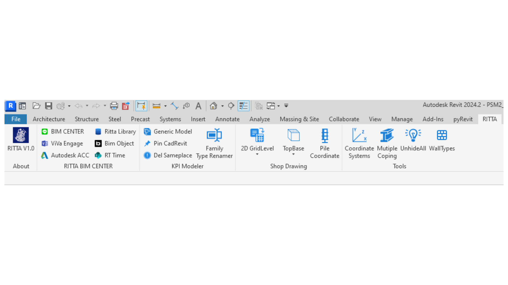

Back to Portfolio
Revit Add-ins

- Developed Revit add-ins to automate repetitive modeling tasks and increase team productivity.
- Designed custom user interfaces using Python and HTML for better usability.
- Streamlined BIM workflows through personalized tools tailored for in-house engineers.
- Created automated documentation and quality control systems for architectural projects.
- Leveraged pyRevit and Revit API to write and deploy custom scripts.
- Used WPF and XAML to create responsive GUI panels within Revit.
- Implemented Python scripting for data processing and automated reporting.
- Integrated external databases and APIs for enhanced functionality.
- Add-ins for creating Legend component for doors and windows